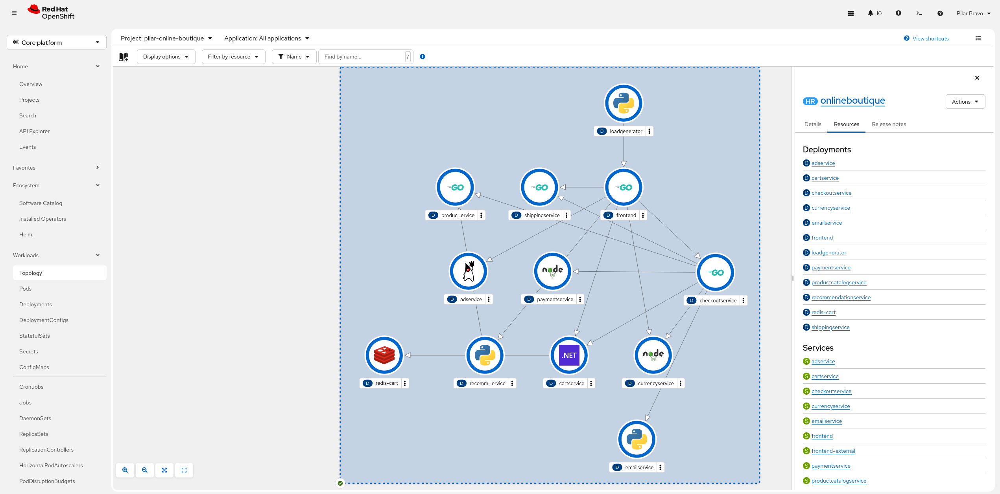
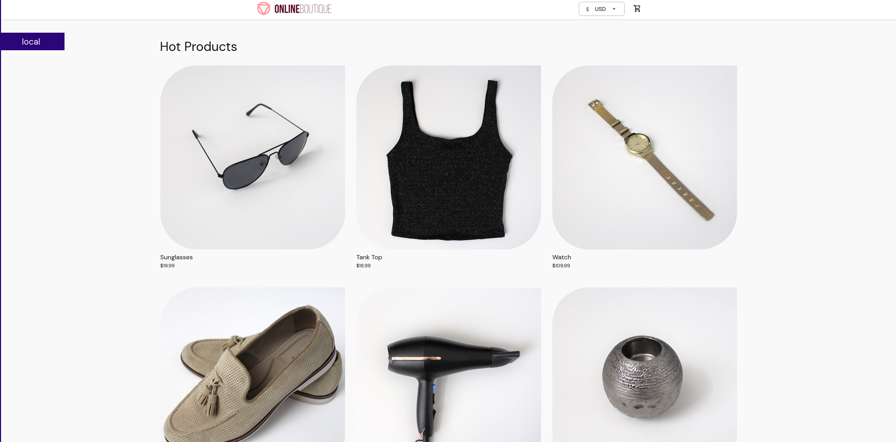

The topology view
The Topology view is a powerful tool that allows you to visualize the relationships between the different components of your cluster. It is a great way to get a quick overview of the cluster and the resources that are deployed on it.

The topology view is organized into several sections:
-
Nodes: The nodes are the physical or virtual machines that are running the cluster.
-
Pods: The pods are the containers that are running on the nodes.
-
Services: The services are the services that are running on the cluster.
-
Routes: The routes are the routes that are running on the cluster.
To see a real example of the topology view, go to Home → Topology after deploying the online-boutique application.
To view the application’s topology, first switch to the project where the online boutique application was deployed. You can select any service to see the available options. For the frontend microservice, the platform will display the associated pods, services, and the active route. Click the route to open the running application.

| At the moment, the topology view in the dark mode has not enough contrast to display the connections between the components |